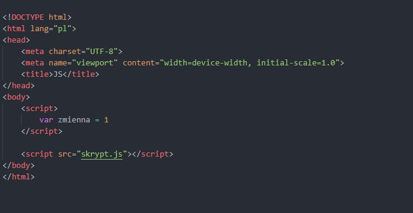
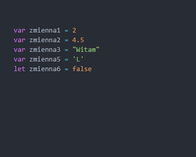
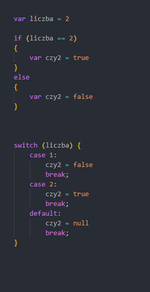
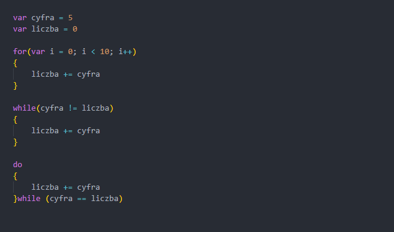
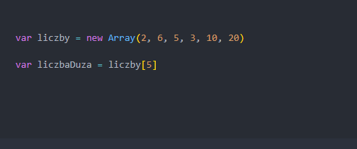
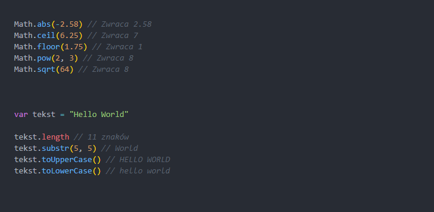
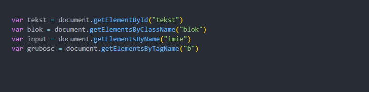
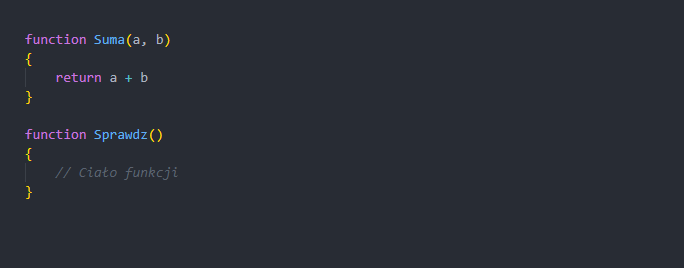
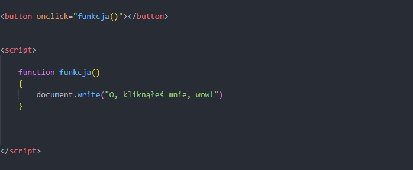
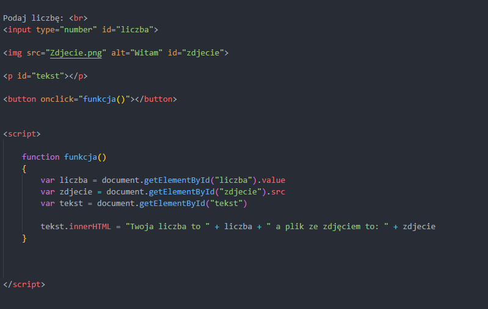

Java Script jest językiem programowania, zaliczanym do części front-end, działającym po stronie klienta (przeglądarki), który służy do obsługi chociażby stylów na stronie, obliczaniu pewnych danych itd. Jest on jednym z najłatwiejszych języków do nauczenia się. Obecnie na egzaminie występuje rzadko, ale warto pewne podstawowe informacje znać.
Umieszczenie na stronie
Podobnie do CSS, skrypty JS możemy umieszczać na dwa sposoby:
- Wewnątrz pliku HTML – Skrypt mieści się pomiędzy znacznikami <script> </script>
- W pliku z rozszerzeniem .js – Skrypt znajduje się w oddzielnym pliku, który podłączony do strony jest poprzez <script src="skrypt.js"> </script>
Zaleca się, aby skrypty umieszczane były przed znacznikiem </body>, czyli pod koniec strony sekcji body

Zmienne i rodzaje danych
W celu deklaracji zmiennych, używamy albo słowa var, albo słowa let. Co prawda, var jest starszym formatem, ale najprościej to właśnie jego używać, szczególnie na egzaminie. Jeśli chodzi o nazywanie zmiennych, to warto pamiętać, aby:
- Nie zaczynać od cyfry, czy znaków specjalnych (poza _)
- Nazywać je najlepiej tak, aby odzwierciedlały wartości, które w sobie zapisują
- Wyrazy oddzielać znakiem podłogi (_), bądź wielkimi literami
Co prawda, w JS nie ustalamy z góry, jakie dane będzie przechowywać konkretna zmienna (jak np. w C++, czy C#), natomiast musimy brać pod uwagę, że są pewne typy danych, możliwych do zapisania:
- string – Typ tekstowy. Zapisywany między " " lub ' '
- int – Typ liczbowy całkowity
- float – Typ liczbowy rzeczywisty (liczby zmiennoprzecinkowe)
- char – Typ pojedynczego znaku, zapisywany pomiędzy apostrofami ' '
- bool – Typ logiczny. Przechowuje wartości true albo false
Wszelkiego rodzaju liczby piszemy bez używania jakichkolwiek apostrofów, lecz warto pamiętać, aby części ułamkowe oddzielać od części całkowitych kropką, a nie przecinkiem, jak to w matematyce.

Instrukcje warunkowe
DO OBU JĘZYKÓW. Instrukcje te pozwalają na wykonywanie konkretnych działań w wyników pewnych wyrażeń logicznych. ZAWSZE instrukcja wykonywana będzie w przypadku true albo w przypadku false. Instrukcje warunkowe posiadają dwa rodzaje:
- if/else – Podstawowa instrukcja warunkowa, która ma działania w przypadku true i false. Rozszerzeniem tej instrukcji może być else if, czyli sprawdzenie kolejnego wyrażenia logicznego, gdy ten w if'ie się nie spełni.
- switch – Instrukcja warunkowa, która dotyczy konkretnej zmiennej. Używana wtedy, gdy potrzeba jest sprawdzenia wielu wartości danej zmiennej (ponad dwóch). Trzeba pamiętać, że każdy przypadek (case) musi mieć na końcu słowo kluczowe break, gdyż jeżeli tego nie będzie -> instrukcja dalej będzie analizować kolejne wartości: czego nie chcemy. Natomiast słowo default jest takim odpowiednikiem else, czyli przypadku, gdzie żadna wartość nie pasuje do wyrażenia logicznego.

Pętle
DO OBU JĘZYKÓW. Pętle są kawałkiem kodu, który ma za zadanie wykonywać się w określonej liczbie powtórzeń. Z pętlami zatem można kojarzyć tablice. Wyróżniamy 3 główne rodzaje pętli:
- for – Pętla ta wykonuje się określoną z góry liczbę razy, w zależności od ustalonej tam zmiennej, a ta zmienna zmienia swoją wartość także zależnie od potrzeby, czyli może inkrementować (+1 w górę), dekrementować (-1 w dół), czy zmieniać swoją wartość określoną przez programistę razy.
- while i do…while – Pętla, która wykonuje się, dopóki wartość logiczna pomiędzy nawiasami jest true. Przy tej pętli należy uważać, ile razy się wykona, ze względu na to, że o ile pętla do…while wykona się zawsze raz, to pętla while może się wcale nie wykonać, albo wykonywać się będzie w nieskończoność.
- foreach – Pętla specyficzna dla elementów list/tablic. Zazwyczaj używana do operacji na wartościach zapisanych w tychże tablicach/listach.

Tablice
DO OBU JĘZYKÓW. Tablice są pewnymi specyficznymi miejscami w pamięci RAM komputera, ilościowo określanymi z góry lub automatycznie w zależności od potrzeb. Tablice mogą być jednowymiarowe lub dwuwymiarowe (jak np. tabela). Zwykle używamy tablic jednowymiarowych, szczególnie na egzaminie.
Indeksowane są poprzez liczby poczynając od 0, albo poprzez nazwy tekstowe -> wtedy mamy do czynienia z tablicami asocjacyjnymi. Spotkać je możemy tutaj TYLKO W PHP

Funkcje matematyczne i znakowe
Czasami pobranie danych nie wystarczy, gdyż trzeba coś obliczyć, połączyć itp. Do tego mamy wiele ciekawych i przydatnych funkcji. Zaczniemy od tych matematycznych, do których należy obiekt Math, a jego najważniejszymi dla nas funkcjami będą:
- abs() – Zwraca wartość absolutną liczby, czyli większą od 0
- ceil() – Zaokrągla liczbę do góry
- floor() – Zaokrągla liczbę do dołu
- max() – Zwraca wartość maksymalną z podanych liczb
- min() – Zwraca wartość minimalną z podanych liczb
- pow() – Zwraca potęgę z podstawy liczby pierwszego argumentu i potęgi z liczby drugiego argumentu
- random() – Zwraca losową liczbę z przedziału od 0 do 1
- round() – Zaokrągla liczbę zgodnie z matematycznymi zasadami
- sqrt() – Zwraca pierwiastek z podanej liczby w argumencie funkcji
Co w przypadku funkcji tekstowych?
- W przeciwieństwie do liczbowych, nie ma specjalnego obiektu, gdyż konkretna funkcja odnosi się np. do zmiennej przechowującej ciąg znaków
- length – Zwraca długość danego tekstu
- slice() – Wycina konkretną ilość znaków z tekstu. Numeracja zaczyna się od 0
- substring() – Działanie podobne do slice
- substr() – Podobnie zwraca pewną ilość znaków z tekstu, lecz drugi argument wyznacza w przeciwieństwie do slice ilość potrzebnych znaków, a nie kolejne znaki w całym tekście
- replace() – Zamienia jeden tekst na inny, ale tylko jego pierwsze wystąpienie
- toUpperCase() – Zwraca ciąg znaków, gdzie każdy znak zapisany jest wielką literą
- toLowerCase() – Zwraca ciąg znaków, gdzie każdy znak zapisany jest małą literą
- concat() – Łączy ze sobą ciągi znaków. Może być używany tak, jak poprzez +
- trim() – Usuwa niepotrzebne spacje z ciągu znaków, zwykle dotyczy to spacji na początku i końcu wyrażenia
- toString() – Zwykle używany przy liczbach, zamienia typ liczbowy na typ znakowy. UWAGA, DOMYŚLNIE WARTOŚCI POBIERANE SĄ TYPEM ZNAKOWYM.
- split() – Zamienia ciąg znaków na tablicę. W argumencie należy wskazać, co jest separatorem pomiędzy danymi wyrażeniami.
Przy tekście, warto pamiętać, iż KAŻDY TEKST JEST TEŻ TABLICĄ, stąd można dzięki temu np. zmienić litery w co drugim znaku na duże. Warto o tym pamiętać.

Pobieranie danych z elementów
W JS, aby zdobyć dane, należy „podłączyć” konkretny element z HTML'a poprzez pewną funkcję. Służy do tego tzw. document.getElement…, gdzie dany element możemy pobierać poprzez:
- ID (byId) – Identyfikator danego elementu
- Klasę (byClassName) – Klasa danego elementu
- Nazwę elementu (byName)
- Konkretny znacznik (byTagName)
Jako argument tej funkcji, należy użyć nazwę pomiędzy cudzysłowami " "

Funkcje użytkownika
Funkcje są pewnym kawałkiem kodu, który ma za zadanie uruchamiać się w konkretnym zależnym momencie. Będziemy tu mówić ogólnie o funkcjach, bo zagłębiając się można dostrzec różnice, gdzie funkcja zwraca wartość, a metoda/procedura nie zwraca wartości. I to właśnie te metody zwykle będziemy używać w pisaniu skryptów szczególnie na egzaminie.
Mogą być one wbudowane (jak wymienione wyżej na przykład), bądź stworzone przez użytkownika

Zdarzenia
Zdarzenia on.. są zdarzeniami, które wykonują się w konkretnym momencie. Najczęściej będziemy mieć do czynienia z zdarzeniem onclick, który wykonuje się, po naciśnięciu danego elementu. Po więcej takich elementów mamy zarówno tabelkę obiektów DOM na końcu arkusza w egzaminach, jak i też pod tym adresem.

Modyfikacja elementów strony przez skrypt
Warto zauważyć, że kiedy już złapiemy dany element, to chcemy zmienić zawartość, styl, odnieść się do wartości itp. Jest parę takich słów kluczowych, które pozwalają na zdobycie interesujących nas danych:
- value – Pobiera wartość danego elementu
- src – Pobiera źródło danego elementu (do pliku np. w zdjęciach)
- innerHTML – Modyfikuje zawartość w HTML'u
- style – Umożliwia modyfikację pewnych elementów stylu danego elementu na stronie
- document.write() – Wyświetla TYLKO dane zawarte pomiędzy nawiasami.
